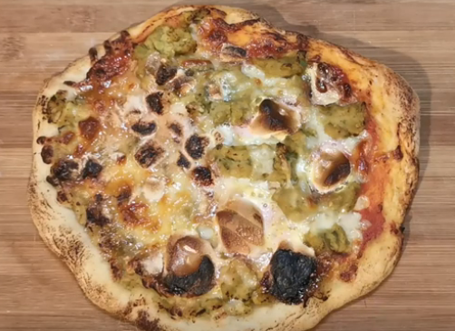

Guacamole Marshmellow

Description
¡Olé! This delicious pizza combines the Italian pie with the famed Mexican dip, and then adds a touch of sweetness with the marshmellows. ¡Perfecto!
Ingredients
- Preheat oven to 475 degrees
- Stretch pizza dough to 12 inch circle.
- Add a nice heaping of our homemade sauce. Spread evenly across the dough
- Cover the pizza with mozzarella.
- Add spoonfuls of guacamole
- Bake for 10 minutes
- Add marshmellows to pizza and bake for another 5-10 minutes (until the crust is golden brown)
Back to recipes